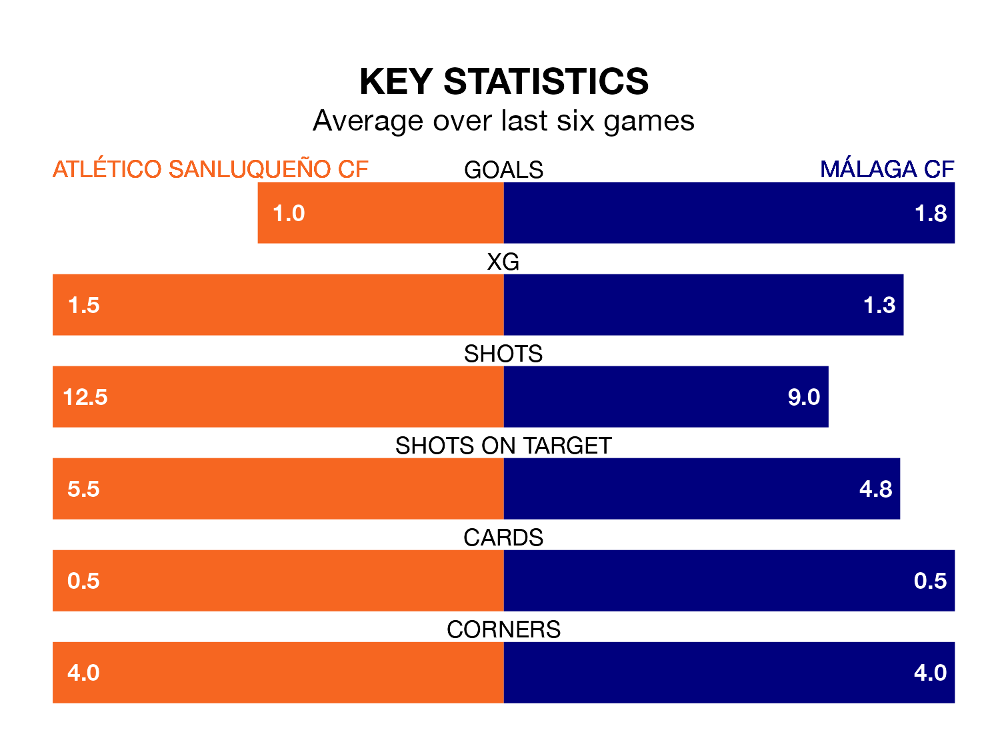

Málaga CF visit Atlético Sanluqueño CF at the Estadio El Palmar on Sunday on the back of three consecutive wins in Primera Division RFEF Group 2.
Málaga have picked up 15 points from their last six games, and they face an Atlético Sanluqueño side who also won their last match, and have collected 12 points from the last possible 18.
With 40 goals in 26 games so far this season, Málaga are scoring more than average in the league with 1.5 goals per game. And they are conceding fewer than average, letting in 19 goals at a rate of 0.7 per game.
Atlético Sanluqueño, meanwhile, are average scorers, with 1.1 goals per game. They have conceded 1.0 goal per game.
In Roberto Fernández Jaén, the away side have one of the league's most on-form strikers so far this season. He has notched 10 goals in 23 appearances, to sit second in the scoring charts.
His goal rate of one every 185 minutes is quicker than that of Francisco Mwepu, the hosts' top scorer with a goal every 208 minutes, and a total of seven goals in 21 games.
Málaga are fourth in the table after 26 games, of which they have won 15 and drawn six, earning 51 points.
Atlético Sanluqueño are eight places behind Málaga in 12th, with eight wins and nine draws putting them on 33 points.
Atlético Sanluqueño's last match was on March 3, a 2-1 win against Linares Deportivo, with Ignacio Ramón Del Valle and José Luis García Pérez getting the goals for Atlético Sanluqueño.
Málaga beat UD Ibiza 1-0 last time out, also on March 3, with Dionisio Emmanuel Villalba Rojano on the scoresheet.
Updated: 09:34 (UTC), 08/03/24